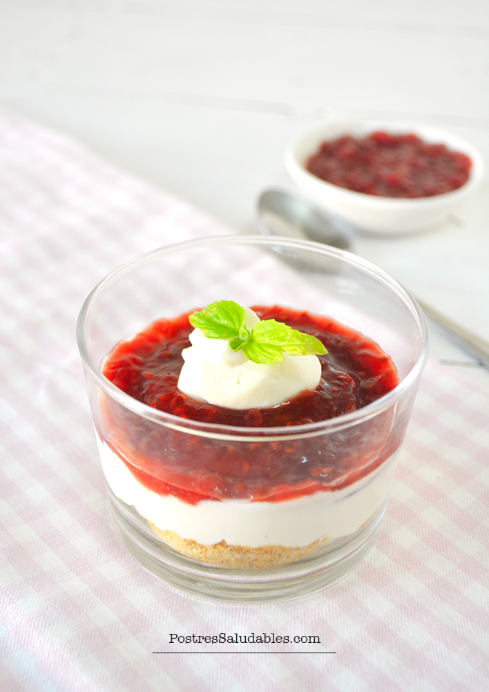

Modo Oscuro
FIT
con horno
con microondas
con heladera
FIT
eventos
Los postres "fit" o saludables son una opción deliciosa y nutritiva para disfrutar del dulce sin sacrificar la salud. Estos postres utilizan ingredientes más naturales y menos procesados que los postres tradicionales.
torta chocolate keto
helado de frutilla

cheesecake saludable